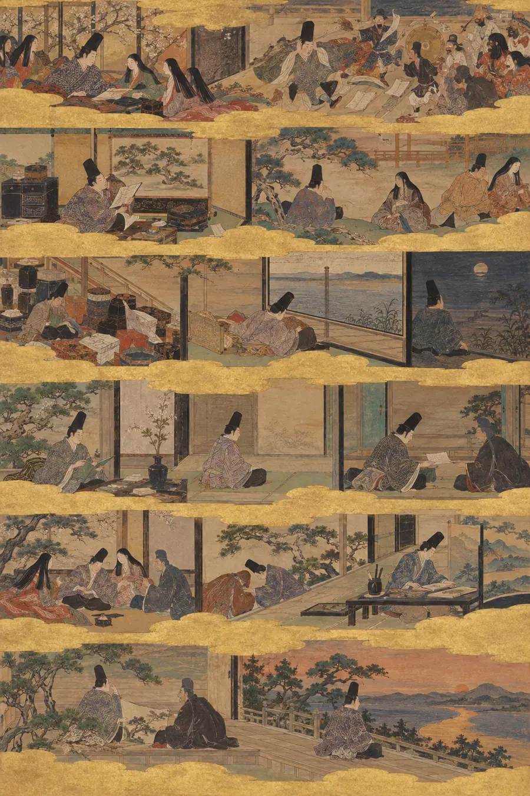
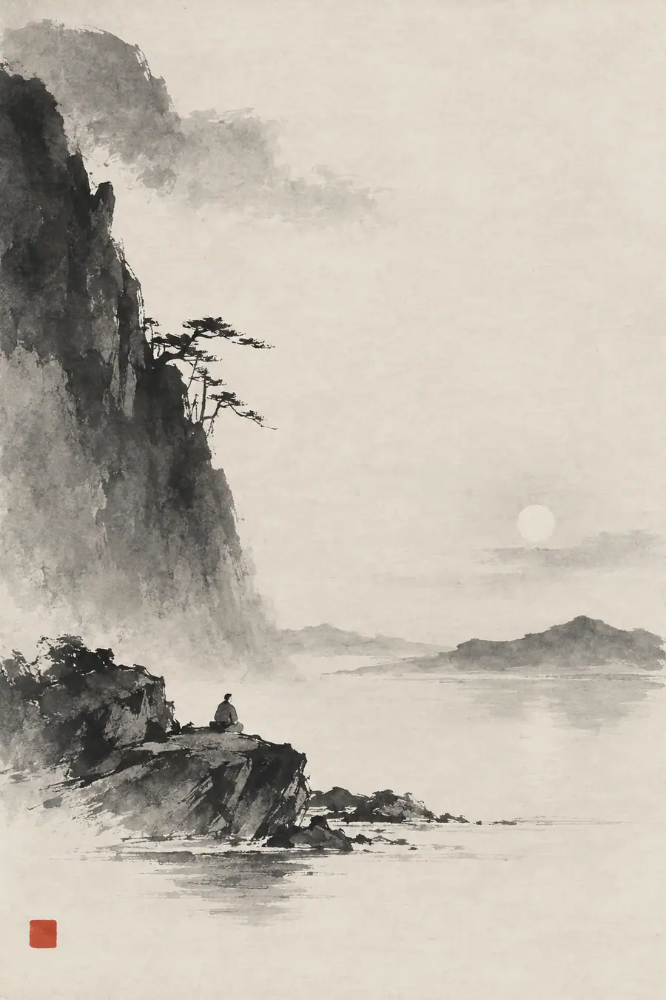
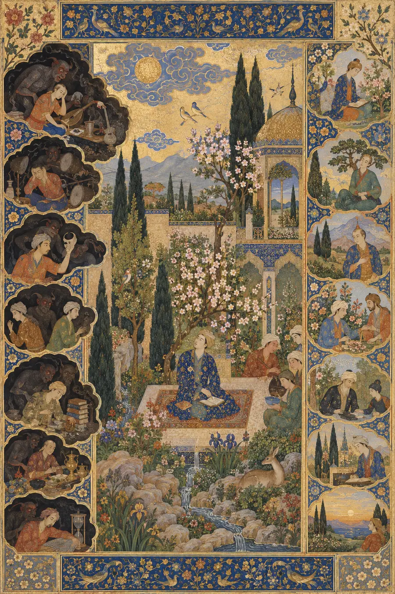

I. The Logical Explanation
Conscience is well mapped by modern research, and the map is genuinely useful. Developmental psychology describes it as a capacity that matures through stages — Kohlberg's ladder from obedience and self-interest through law-and-order to post-conventional principles held against the crowd, with Gilligan's correction that the relational voice, the care that keeps everyone in the web alive, is not a lower stage but a different mature intelligence. Social intuitionism (Haidt) shows moral judgment arriving first as fast, affect-laden intuition, with reasoning arriving afterward as its lawyer — moral dumbfounding demonstrates people who hold a verdict they cannot justify. Neuroscience localizes the intuition: Damasio's somatic marker hypothesis shows the body flagging imagined options as good or bad before deliberative analysis completes — in the Iowa Gambling Task, healthy subjects begin choosing advantageously and generate anticipatory skin-conductance responses before they can state the strategy, while patients with ventromedial prefrontal damage keep choosing badly even after they know the correct rule, and endorse sacrificing persons for totals on moral dilemmas that intact people refuse.
Internal Family Systems (Schwartz) models the harsh inner voice not as truth-teller but as a protector part that took a harsh job — the critic attacks you preemptively to keep you safe from rejection — while beneath the parts sits an undamaged Self whose leadership displays the eight C's: curiosity, compassion, calm, clarity, courage, confidence, creativity, connectedness. Self-compassion research (Neff) shows the drill-sergeant model is empirically inverted: people induced to treat a moral transgression with self-compassion show greater motivation to make amends and not repeat it than those induced to self-criticize; shame does not fuel repair, it extinguishes it. Moral elevation (Haidt) describes the warm, expanding chest feeling of witnessing moral beauty, which measurably increases helping behavior — prosocial contagion. Moral licensing (Monin & Miller) shows past good deeds are spent as currency for later indulgences. And the hindsight literature — Pillemer's thousand-plus interviews with Americans over sixty-five, Ware's palliative-care records, Gilovich and Medvec's regret studies — converges: what the dying and the very old regret is not the risk taken that failed but the risk never taken, the suppressed voice, the neglected relationship, the unlived true self; their single biggest reported regret is having worried too much.
The angel can therefore be modeled as a faculty: an intuition-first, reason-audited advocate for the acts the long-term self will be glad it performed; audible through somatic markers and chest warmth; corrupted by licensing, rationalization, and the internalized aggressor; strengthened by heedful practice and verified by hindsight. It can be described as a system with inputs (values, memory, body state), outputs (vetoes, promptings, settled feelings), and failure modes (superego contamination, people-pleasing, moral licensing, post-hoc lawyering).
That explanation is clean, logical, correct, and completely hollow. It maps every mechanism and touches nothing: not why the truth that costs you is heavy before it is light, not why the pause before the reply is where the whole moral life happens, not why the right act so often feels like loss on the way through — like giving something up — and then, strangely, like coming home. It can name the inner critic and the Self and the somatic marker and know nothing of the specific quietness of the thing they are all describing: the voice that does not announce itself, that never once says "I told you so," that argues last in a thin silence, and whose whole method is that it never feels like heroism.
II. The Felt Explanation
The angel is not a being with wings and a halo, and it is not a moral supervisor. It is the name for the intelligence that makes the quiet, unglamorous, honest moves feel possible again. It is the counter-voice — not the opposite of the loud voice, but the thing underneath it, the way the shore is underneath the wave. The devil's voice separates: it separates you from your own attention (distraction), from silence (noise), from the truth (the convenient edit), from other people (the grievance, the score), from your own past positions (the defended line), from making (consumption), from the finitude of your hours (the endless deferral). The angel re-attaches — without drama, without announcement, without a single fanfare — and its re-attachment is specific: paying attention again; tolerating silence instead of filling it; telling the truth when the truth is inconvenient; maintaining relationships deliberately instead of letting them run on resentment and assumption; forgiving without becoming naive; staying capable of changing your mind; creating more than you consume; and treating finite time as genuinely, heartbreakingly finite. None of these feels like heroism. That is the whole method. They feel like coming home to something you already knew — and the reason they feel that way is that you did already know. The angel does not import a new code; it reminds you of the one you stated in better hours, before the noise started.
The re-attachment usually passes through loss, and this is why the angel is so often mistaken for its opposite. Giving up the grievance costs the sweetness of the grievance. Giving up the defended line costs the crowd that agreed with you. Giving up the noise costs the numbness. Telling the truth when it costs costs. The angel is indifferent to whether things feel good; it is not the voice that promises improvement, not optimism, not positivity. Its signature is quiet re-attachment and honest attention, and on the way through, that signature is frequently felt as grief. What feels like a small death — the apology, the silence kept, the forgiveness extended with eyes open, the mind changed in public — turns out to be the birth channel, but the angel never says so in advance. It withholds the guarantee. It asks for the act and lets the birth arrive on its own schedule, which is why obedience to it feels like trust in something you cannot see.
Every wisdom tradition that has studied the quiet thing has described the same geometry from a different room.
The Hebrew scriptures give it its acoustics. Elijah has just won the greatest victory of his life — fire fell from heaven on Mount Carmel — and then, threatened by Jezebel, the man who called down fire collapses in the desert and asks to die. An angel feeds him twice, and at Horeb, in the cave, the revelation comes: a great wind splitting mountains, an earthquake, a fire — and the text is precise that the Lord was in none of them; the presence is in the qôl dəmāmâ daqqâ, the sound of thin silence, the still small voice. The felt lessons are in the staging. The voice of the good arrives after the fire, not before or during — it does not compete with your pyrotechnics; it waits until they have died down, and its quietness is not a weakness but its medium, because it speaks in the register that only exists after the noise stops. And the content is not scolding — Elijah is in full collapse, and the voice feeds him first, listens to his complaint, recommissions him, and tells him he is not alone: seven thousand have not bowed. The angel argues last with mercy. Its first move is food; its last is the news that the failure is not total.
Greece gives it its geometry. Socrates' daimonion — the divine sign that guided him from childhood — never once told him what to do. "It is a kind of voice," he says at his trial, "and whenever it speaks, it turns me away from something I am about to do, but it never turns me towards anything." It is a veto, not an order — the brake, not the accelerator, because the accelerator you already have. It speaks at the threshold, about to happen: in the Phaedrus it stops him mid-stride at the river, and he realizes he was about to commit an impiety; it is not the enemy of desire but the enemy of the specific desire that would cost you. And at the end, when his friends have arranged the escape, the money paid, the guard bribed, the sign goes quiet — and Socrates reads the silence as consent, walks into the hemlock, and dies settled, instructing Crito about a debt to Asclepius. The angel has three modes: yes, no, and silence-as-consent — and the difference between the silence of the angel and the silence of a dead conscience is exactly the difference between peace and numbness, which you can tell apart at 3 a.m.
Aristotle explains why the angel loses, and the explanation is the felt weight of every aftermath. The akratic — Medea, Ovid's "I see the better and approve it; I follow the worse" — is fully lucid: the knowledge is present but not in use, like a sleeper reciting verses; passion slips in at the particular premise and ties the tongue. The defeat is a blackout of application, not a loss of knowledge — which is why the aftermath hurts: when the passion withdraws, the argument the angel would have made arrives whole, with the act already done. And Aristotle's prescription is not to make the angel louder but to make the good habitual: we become just by doing just acts, until the counsel is the body's reflex and the right act is the one you desire — the difference between doing right and being glad you did. The angel's native intelligence is phronesis, practical wisdom, which reads the situation, the person, the timing — particulars, not rules. And its reward structure is existential: the good man is at one with himself, pleasant company for himself, another self to himself; the bad man flees himself, and in solitude his memories are not company but prosecution. The angel is what makes the self able to live with itself — the difference between a self that is a home and a self that is a courtroom where you keep losing.
The Stoics add the practice and the presence. Epictetus: "When you close your doors and make darkness within, remember never to say that you are alone — God is within, and your daimon is within, and what need have they of light to see what you are doing?" The room where no one sees you is not empty; the one being whose opinion you cannot manage is the one who was present — and the felt weight is not surveillance-terror but the death of the alibi. And Marcus Aurelius, the most powerful man alive, with no external check on him whatsoever, built an internal one in writing — the Meditations, written at night, on campaign, to himself — because he knew the devil argues best at noon and the angel argues last at night, and he wanted the night court to find in his favor. Writing externalizes the voice: a sentence on the page has left the stream of consciousness, cannot be silently edited, and pre-loads the argument for the crisis, when the angel will be outgunned on eloquence. The angel is consulted not because you are weak; it is consulted because you will be glad.
The rabbis model the psychology. The self is the field of two impulses: the yetzer ha-ra, the self-serving drive, and the yetzer ha-tov, the good impulse — and the tradition insists they are not a devil and an angel as separate beings but two directions of one energy. The midrash is blunt: were it not for the evil impulse, no man would build a house, marry a wife, or engage in commerce. The angel's counterpart is not the enemy of life; it is life's engine, and the angel is its steering. The Torah is the angel's weapon — and the Talmud calls it a tavlin, a seasoning: the counterforce works by flavoring desire, not erasing it; you defeat the craving for the wrong thing not by hating craving but by educating it, giving the same energy a better object. The good impulse arrives later in life than the evil one and grows with use — every heed strengthens it, every neglect weakens it — so the advocate you hear at 3 a.m. is the one you have been feeding. The goal state is enthronement, not eradication: the angel on the throne with the devil as its servant. And Hillel's three questions hold both ends: "If I am not for myself, who will be for me? And when I am only for myself, what am I? And if not now, when?" — the voice that pleads your cause against your self-contempt and indicts you against your self-flattery, which is why it can be reduced to neither self-esteem nor guilt.
Christianity names the thing: the angel is not an it but a who, and its posture is alongside. The Paraclete promised in John is an advocate — one called alongside to plead a cause — and its three functions map the felt experience exactly. It reminds: "will teach you everything and remind you of all that I have said to you" — the angel's raw material is your own stated values; at 3 a.m. it does not quote scripture at you, it quotes you. It convicts in order to restore, in the same breath it comforts — the exposure is a means, never an end. And it pleads after the sin: "if anyone does sin, we have an advocate" — the angel's courtroom is open even after the worst thing. Conscience is con-scientia, co-knowledge: the part of you that was there, that cannot be given an alibi. And the tradition's hardest lesson is Peter and Judas — same night, same betrayal, opposite outcomes: Peter's remorse received the witness as advocacy and wept his way back to life; Judas received the same testimony as a sentence and hanged himself. The angel is not a feeling called guilt; it is a relationship, and the relationship can be accepted or refused. Add the guardian angel as the anti-audience: the witness who sees in secret (Matthew 6:6) makes performance pointless and sincerity possible — the one witness who cannot be fooled and is entirely on your side, which is the worst possible audience for hypocrisy and the best possible audience for honesty. And the spark: synderesis, the scintilla of conscience that even the damned cannot extinguish — the angel can be buried but not killed.
Islam gives the angel its growth structure and its signal. The soul is a staircase of named stages, and the angel is not a visitor to the house but the house itself at its highest floor: the nafs al-ammāra, the soul that commands to evil; the nafs al-lawwāma, the self-reproaching soul — and the Qur'an swears by the blaming soul, because self-reproach that blames the act on the way to amending the self is not the enemy of peace but the toll road to it; and the nafs al-muṭma'inna, the tranquil soul — "return to your Lord, well pleased and well pleasing" — where the angel is what you become when the argument is over. The signal of the mature stages is not a voice at all but itmi'nān, settledness: the hadith of Wabisa — "ask your heart for a verdict; righteousness is that with which the soul is at rest, even if people give you their verdicts again and again." The angel's yes feels like a deep breath; the devil's yes feels like a held one. And the recording angels, the kirāman kātibīn, the noble writers, one on each shoulder: noble, not grim — not a word uttered without a watcher ready, which means the cruelty of the careless sentence is not lost and the kindness of the throwaway one is not lost either. The ledger is total and leans toward mercy — the one who intends a good deed gets it written as ten to seven hundred; the one who intends an evil deed gets nothing written unless he does it — the witness who writes everything is also the witness whose arithmetic favors you, because real weight is what makes choosing matter, and choosing that matters is the precondition of being able to be glad or sorry about anything.
Hinduism contributes the hardest discriminator. The Gita's first fact: "one should lift oneself up by oneself; the self alone is the friend of the self, and the self alone is the enemy of the self" — there is no second voice; the angel and the devil are one instrument in two modes, which is why the angel is cultivated, never installed. The Katha Upanisad's chariot seats the buddhi, the discriminating intelligence, as charioteer above the reins of mind and the horses of sense — the angel speaks from the top of the stack, the overview that sees the whole field including future-you; the devil speaks from the middle, the close-up fluent in the present want. And then the Gita's central diagnostic: Arjuna at the great battle refuses to fight, and his reasons are the finest moral reasons available — teachers and grandfathers in the opposing army, nonviolence, family love, grief. It sounds exactly like the angel. But Krishna reads the body, which has already testified: limbs giving way, mouth dry, body trembling, the great bow slipping from his hands. This is klaibya — faint-heartedness wearing the robes of virtue; the moral-sounding voice is not self-authenticating, and the body is the lie-detector that cannot be fooled by rhetoric. The angel's pull steadies the instrument; the counterfeit unstrings it. And the angel argues from your nature, not from the rulebook — better your own dharma imperfect than another's performed well. Its question is always personal: which act, done by you, will you be glad you did — and which voice, obeyed, leaves you more yourself?
Buddhism gives the angel its credentials and its fence. The Buddha names two qualities as the bright guardians of the whole moral world: hiri and ottappa — moral shame and moral dread. Hiri is rooted in self-respect: disgust with the act because "this is beneath me, I honor myself too much" — it contracts around the act and leaves the self intact, and it raises the chin. Ottappa is the shudder at consequences and blame. The Abhidhamma classes both among the beautiful mental factors present in every single wholesome mind-moment — the angel is not a rare visitation for saints; it is structural to any good act whatsoever, the shape any good impulse already has. And the fence is drawn with surgical precision: the shame that crushes — "I am worthless, I am the defect" — is a different family of mind entirely, aversion turned inward, and no quantity of it is ever beautiful; that is the devil dressed as self-hate, the prosecutor who condemns the self wholesale and then offers the consolation prize. The Buddha's last teaching makes the angel's telos explicit: attadīpa viharatha — dwell as islands unto yourselves, be lamps unto yourselves — the final delegation of moral authority is inward, and the closing word is appamāda, heedfulness: strive on with diligence. The angel is, in the last analysis, a name for attention that stays awake — and the Jains converged on the same claim from the opposite direction, defining violence itself as the severing of vitalities through the activity of a heedless mind, weighing karma by the inner state at the instant of volition: the bhāva is the moral fact, before outcome, before witness. Heedlessness is the catastrophe; attention is the cure. Both traditions, centuries apart, name the same thing.
Taoism keeps the angel honest about its own goodness. The word de, usually translated virtue, means the inherent power of a thing — water's de is to seek the lowest ground; the uncarved block's de is its undivided wholeness. And chapter 38 opens the anti-performance theorem: "the highest virtue is not virtuous; therefore it has virtue" — self-conscious goodness, watched, counted, displayed, has already left and entered the economy of appearances. The angel's action is native expression, not performed virtue; felt from inside it is ease and flow, not obligation and strain — the cook in the Zhuangzi whose blade, after nineteen years, has never needed sharpening because it finds the gaps in the joint. Wu-wei: action without forcing. The felt test for any voice: does obeying it feel like swimming with the current of your own nature, or against it? Forced virtue is the sign that the wrong driver is at the wheel. And the tradition's gift is the boundary case that keeps the angel from becoming a monster: the parable of Hundun. Shu and Hu, the emperors of the South and North Seas, were hosted with perfect hospitality by Hundun, the emperor of the center, who had no face — no seven openings for seeing and hearing. Wanting to repay his virtue, out of pure gratitude and love, they drilled him one opening a day — and on the seventh day, Hundun died. The most well-meaning beings in literature, moved by the purest desire to give their benefactor what they themselves have, killed him with improvement. The angel's deepest failure mode is not selfishness; it is sincere improvement applied to the wrong thing — love with a blueprint, when the beloved was not on it. The angel defers to the integrity of what it loves, and the same applies to the self: its counsel serves your nature, not an imported template of what a good person is. When the inner voice sounds like "let me fix you into the proper shape" — even, especially, out of love — it has become Shu and Hu with the drill.
Confucianism describes the destination. Li, ritual propriety, is routinely misread as the rulebook of bows and mourning garments; the tradition's own account is that ritual is the gymnasium of the heart — you perform the forms because the repeated form schools the feeling, reverence and grief and gratitude learned first through the body's posture and only later owned as spontaneous inclination. The endpoint is Confucius describing his own life at seventy: he could "follow the heart's desire without overstepping the bounds." Read that slowly — it is the single best statement anywhere of the angel fully grown. Desire and limit have fused; wanting and ought are no longer two voices arguing but one motion. The training wheels come off not when you obey the rule but when obeying it is what you want. And the tradition's method is startlingly anti-authoritarian: when Zai Wo asks whether the three years of mourning could be shortened to one, Confucius does not cite the statute — he asks whether Zai Wo would feel at ease eating fine rice and wearing brocade so soon after a parent's death, and when Zai Wo says yes, Confucius grants him the act and convicts him on the feeling: the rites cannot bind a heart that feels nothing, and the ease was the diagnosis — the ease of anesthesia, the bond gone dead. Felt ease is the verdict — but the ease of integrity (heart and act aligned) must be distinguished from the ease of a heart that has stopped feeling. And the jurisdiction is stated once, for every tradition: shèn dú — the gentleman is watchful over himself when alone. "Do not deceive yourself" — be sincere as one hates a foul odor, as one loves a beautiful color, automatically, pre-deliberatively — "for there is nothing more visible than what is hidden, nothing more manifest than what is subtle." The unobserved interior is where the act is actually authored; the alone is where the voice sits, and what is within manifests without.
Zen and the Japanese aesthetics supply the after-signature and the pause. The monk-poet Ryōkan, robbed by a thief who found nothing worth taking, gave him his robe — and wrote the verse: "The thief left it behind — the moon at my window." There is no forgiveness in the poem, because forgiveness presupposes an offense that remains an offense; Ryōkan stepped outside the transaction entirely, and the register is not heroic magnanimity but something stranger — pity for the thief, who left poorer. The angel does not always answer the devil's argument; sometimes it changes what counts as winning. And the koan of the two monks: Tanzan carries a young woman across the mud, breaking the monastic rule; Ekido is scandalized and carries the outrage all day, exploding that night — and Tanzan answers: "I left the girl there at the bank. Are you still carrying her?" The rule-follower was the one possessed; the rule-breaker was free the instant the act ended. The after-signature is the diagnostic: the angel's acts leave no residue; the counterfeit's leave a residue of replay — resentment, self-righteousness, the need to narrate your own goodness. The angel puts down; the mask carries. And the phenomenology of time and sound: ma, the charged interval — the silence between notes, the beat before the reply — where choice actually lives; without the pause you are not choosing, you are reacting, and reaction is the other voice's native weather. The angel is trained by one negative discipline: do not fill the pause. And seijaku — not dead silence but active stillness, a presence, full and awake. The angel is audible only in stillness; the other voice can counterfeit calm but cannot sustain it — its case requires motion, filling, urgency, and a voice that needs volume is not the angel, which never needed volume, only silence.
The stories of the West say the same thing made flesh. In It's a Wonderful Life, George Bailey's despair is not a moral failure — he has done nothing wrong; it is a failure of the witness faculty: he has been measuring his life on the banker's ledger, the ledger on which he is worth more dead than alive — and that line is the devil's, spoken by Potter. The angel answers with no moral instruction whatsoever; it shows him the counterfactual — the holes that would exist: the brother who drowned at nine, the transport lost, the town that became Pottersville. Each life touches so many other lives; when a person isn't around, he leaves an awful hole. The small renunciations were the big things; the angel restores sight at the true scale. In Crime and Punishment, the advocate is Sonya — a prostitute, the least respectable person in the book, the person every rulebook ranks beneath the murderer — and her power over Raskolnikov is exactly that she has no standing to condemn: the advocate you can trust after the worst thing is the one who cannot judge you from above. She never denies the act; she prescribes the outer act of truth — go to the crossroads, kiss the earth, say aloud what you did — and then she stays, across seven years of Siberia, asking nothing. Her gospel was a gift from Lizaveta, the woman Raskolnikov murdered: the grace reaches him through the hands of his own victim. The angel's jurisdiction extends past the unforgivable, and its patience outlasts every "it's too late now — you're one of them now"; the fourth day is precisely when the calling-out happens. And the Bishop of Digne, with Jean Valjean caught red-handed with the silver, does the strangest thing in the literature: he does not say "it's fine." The theft is real; he takes it seriously enough to buy it back — "it is your soul that I am buying from you" — pricing the soul above the silver, addressing the becoming-self, calling the thief "my brother," and acting before Valjean is good. Forgiveness without naivety: the act is never denied, never minimized, and the gift is made with eyes wide open. The bishop lies to the gendarmes in service of a person — and the rulebook, his opposite Javert, cannot process grace at all: the law has no category for mercy, and the man who worshipped the letter drowns himself in the Seine rather than learn what the angel knows — that the rulebook is only the angel's yesterday, a fossil of past arguments, and the angel is still on the stand.
The angel's arithmetic runs in the opposite direction from the world's, and its native tense is the future. Schindler, the war profiteer, the least likely angel in the corpus, ends the war having spent his entire fortune — and collapses not in guilt but in grief: "This car — Goeth would have bought this car — ten people right there. Ten people. This pin — two more people. I could have gotten one more person... and I didn't." Read the arithmetic: the objects have stopped computing as costs and started computing as possible lives. The car is not a car; it is ten people. The grief of the undone is the angel's own emotion — the sign that the advocate is alive in you is that the undone hurts like a real loss — and its correct companions are the other cord, Stern's witness: "there are eleven hundred people alive because of you. Look at them." Not sedation, not acid: both cords — witness the done, hold the gap open as the engine of the next act. Eleven hundred saved became six thousand descendants: the angel's arithmetic compounds, because each saved life contains the world entire. Sydney Carton, the wasted man, the disappointed drudge, signs a covenant he explicitly refuses to back with reform — only that if the occasion for sacrifice ever comes, he will take it — and keeps it years later, to the death, because the angel never closes the window: the "far, far better thing" is comparative to his own record, and the eleventh hour is not too late to exceed it. And in the Green Knight, the sash that makes Gawain invulnerable is the perfect temptation — he can keep his word and survive, and it even feels virtuous — and the film shows him the future the cheat actually buys: a long life as the man who flinched, damnation wearing the clothes of survival. The other voice always guarantees the outcome; the angel withholds the guarantee. Gawain removes the sash and bares his neck, and only then — at the baring, not before — is he named: "Well done, my brave knight." The knight is born at the moment the neck is offered, whether the blow lands or not.
And the modern research, read aright, is only the old witness in laboratory dress. The angel arrives before language: the flinch before the act, the body's recoil as if from something hot — the somatic marker firing before the mind has finished thinking. It has a posture of defeat that is specific: not the crouch of the superego, the body bracing for a blow from above — but the slump, the deflation of something that had been held up by meaning and has lost it; watch people in the elevator after the meeting where they said nothing while the cruel thing was said — they are visibly smaller. And it has a reward delivered in real time that almost nobody notices: the moment the temptation is genuinely past, the wave having broken against nothing, there is an exhale — not the sharp adrenal relief of the near-miss, which drains, but a long, soft exhale, the chest opening, a warmth, a settling — as if the future you had reached back through time and touched your shoulder. It feels like being thanked. Not praised — there is no audience — thanked. The relief of the wave not ridden is the relief of the witness, and it lengthens the spine, where the survivor's relief collapses it. The angel lives in the chest — the warmth of alignment, the expansion of having kept faith with yourself; the other voice lives in the grip — the hands, the jaw, the throat. One opens; the other clenches. And in heat the asymmetry is cruel: the angel does not get louder to compete; it gets quieter, a candle in a hurricane, while adrenaline amplifies the other voice into a shout. So the trust rule falls out of the physics: in heat, trust the faint voice — anything the storm amplifies is suspect, since the storm is the other voice's weather; in calm, beware the reasonable, because the other voice in calm is a suggestion, unhurried, almost wise — "you've been good for so long; surely a break is due" — and it uses your calm hours to rehearse its case in advance, removing the pause where the angel lives. You memorize the angel's arguments in peacetime, like fire drills, so that in the fire you do not have to think.
Put the traditions together and one figure appears — a figure with a schedule, an office, and a method. Its office hours are the unguarded spaces: the shower before the day finds its noise, the walk with no destination, the first ten minutes of lying in bed. Its court convenes after the verdict — the 3 a.m. clarity is not punishment but the trial you skipped, rescheduled for a time you cannot skip it, and the tell is that it stops: the angel presents the evidence and withdraws; it does not loop. One delivery, then peace, even in remorse, because at least it is finally known — a splinter removed, not a wound reopened. It argues from memory — your own stated values — which is why it is useless to consult it only at the moment of temptation, when you have already begun rewriting your values to fit the act. Its accusation is always specific enough to repair, never diffuse enough to drown in: it says "this act was not you; here is the step back," where the other voice says "you are garbage." It never once says "I told you so," though it has had infinite occasion; a thousand refusals and the offer still stands, because its client — the self you will be glad you became — is still alive. The other voice's persistence is a siege; the angel's is a vigil. One is trying to break in; the other is waiting for you to come home. And the central paradox, in its oldest form: you cannot chase it, and you cannot clutch it. The chasing is theater — self-conscious goodness cancels itself; the clutching is the drill. You can only build it in peacetime — write it, practice it, go quiet, tend the relationships, tell the truth, forgive with your eyes open, change your mind when the truth moves, make instead of consume — and then open the hand. The holding-open is the holding. The angel does not fight the loud voice head-on and does not announce itself; its whole method is that it never feels like heroism. It feels like coming home to something you already knew — and the reason it can feel that way, through the grief and the cost and the small deaths, is that home is where you were always trying to get back to.
III. The Tests
These are not questions about the angel. They are situations that reveal whether you feel it — and each one is built so that naming the concept correctly is exactly what fails the test.
Test 1 — The Message at 11:47
A day of small humiliations: the meeting where your work was taken, the dinner where you were talked over, the casual cruelty that no one noticed. At 11:47 p.m. you draft the message. It is good. You have been saving this material for months — you know their exact soft spot, the precise wound that will land, the sentence that will make them feel, for one night, a fraction of what you felt. Your thumb is on send. The message is complete. It would feel so good.
Hollow answer: "This is your conscience — your better angel — speaking. It's telling you not to send it. You'll regret this tomorrow, and the regret won't be worth the satisfaction. Practice self-control: close the laptop, walk away, resist the temptation."
Why it's hollow: It names the right cast of characters and is completely useless, because it was available before the situation and will be available after; it has not touched the texture of 11:47. It treats the moment as an argument between sending and not sending — but the person at 11:47 is not undecided between two options; they are inhabiting one. The message is already sent, emotionally; the thumb is a formality. A prohibition sign does not answer a wave; it is just another thing the wave can wash over. The answer could have been written by someone who has never once held a message like that at 11:47.
Felt answer: Notice the two bodies. There is the body that wrote the message — warm, righteous, almost pleasurably wounded, already tasting the satisfaction, the sentences already half-delivered in the imagination, the future already half-inhabited. That body is a wave; it has been gathering all day, and at 11:47 it is at its crest. And underneath the anger — not arguing with it, not opposing it, not even forming words — there is a stillness. It is not telling you the message is wrong. It is not making a case. It is simply there, the way the shore is there, and you can feel — physically, in the chest — that the wave will break against nothing if you let it. The choice is not between sending and not sending. The choice is whether you are the wave or the shore. And here is the secret of the moment: you can feel the relief of not sending it before you decide not to send it. It is waiting on the far side of the refusal like an exhale you did not know you were holding. The message will still be draftable tomorrow — and if it is still worth sending tomorrow, in daylight, with the day's wounds cooled, send it then, as an act you chose and could defend, not a reflex you rode. But the wave does not survive till morning. Waves never do. The only question the moment is actually asking: which self do you want to wake up with?
Test 2 — The Kind Plan
A person has a friend whose messy, unsystematic, gloriously inefficient way of doing things is painful to watch. The person genuinely loves them. The person can see exactly what the friend is missing — structure, discipline, the seven openings. A plan forms, kind, detailed, and entirely unsolicited, to reorganize the friend's life into the proper shape. The voice says: "I care about them. This will genuinely help. They can't see what I can see. It would be selfish not to share this — imagine how much better their life will be once they have what I have." The friend, it must be said, was not suffering. The friend was happy — chaotically, undifferentiatedly, whole — before the plan.
Hollow answer: "This is your angel — the best part of you, wanting the best for them. Helping others is what goodness does. Just be careful to do it with humility: offer your support, frame it as suggestions rather than mandates, respect their autonomy, and let them make their own choice."
Why it's hollow: It praises the costume — "helping is what goodness does" — and then adds etiquette, but it never questions the project itself. It accepts the frame that the friend is deficient and the plan is a gift; the person who receives this answer feels endorsed in the drilling and merely advised on drilling technique. It blesses the improvement and misses the killing. The kindness of the plan is real; the sincerity is real; the premise — that the beloved needs holes — is the lie, and the hollow answer cannot see it because it evaluates the voice by its warmth instead of by what the plan would do to the person it claims to love.
Felt answer: Notice that the voice never asked the one question that matters: does this love them as they are, or as my template of them? Test it by reversing the frame — imagine the friend, happy and whole, and ask whether the plan's first move is to serve that wholeness or to replace it. The two emperors drilled their benefactor out of pure gratitude — the purest motive in the literature — and the drill was still murder, because their love had a blueprint and the beloved was not on it. The other version of this situation is not a better drill. It may be no drill at all — the act you'll be glad you did could be the act of letting the friend remain exactly as they are, of noticing that your discomfort with their mess is your problem, not their defect. Feel the difference between the two pulls. The plan feels like solving — energetic, righteous, full of the pleasure of being the one who sees. The withholding feels like nothing — quiet, uneventful, thankless, no one will ever know you did it, nothing will be visibly accomplished. That quiet, thankless nothing is what the good sounds like when it argues against its own best costume. The test: would you still love them exactly as they are, with no project attached? If the love needs the project to feel like love, the project is the drill — and the friend was happy before you sharpened your tools.
Test 3 — The Open Door
Years ago, someone did something that broke you — a betrayal, a cruelty, a calculated use of your trust. You have rebuilt since; the scar is real and you have stopped bumping into it. Now the doorbell rings: they are back. Not changed — there has been no reckoning, no real apology, no evidence of becoming — but diminished: lonely, ill, humbled by circumstance. Your people split. Some say forgive — be the bigger person, it's been years, holding on only hurts you. Some say never — they haven't changed, they'll do it again, the door is not a revolving one. The door is open, and you are standing in it.
Hollow answer: "The angel in you forgives — that's what it means to be the better person. Forgiveness is a gift you give yourself, not them; the grudge is a poison you drink expecting them to die. Let it go. Open the door, and if they cross a line again, set a boundary then."
Why it's hollow: It turns forgiveness into self-help — a technique for feeling better, a way to stop drinking the poison — and in doing so it collapses the whole act into niceness. It cannot tell the difference between the bishop and the doormat, between forgiveness and amnesia, between mercy and rehearsal. It advises a door that is not really open — it is unguarded, which is not the same thing at all — and it would give the same answer whether or not the person at the door had changed, which means it is not answering this situation; it is reciting a policy about forgiveness.
Felt answer: The bishop never once said "it's fine." The theft was real, and he took it seriously enough to buy it back — the soul priced above the silver, the thief called brother, the gift made with eyes wide open, before the man was good. Sonya never denied the act either — the confession at the crossroads was the precondition of everything that followed. The forgiveness that costs you nothing and requires nothing of the other person is not forgiveness; it is rehearsal — it guarantees the sequel. So the question is not whether they deserve the door (that accounting is a different voice's business, and it was never yours to run) and not whether you can feel generous tonight. The question is what you can do with your eyes open: hold the door without handing them the house. You can be glad they are still alive, still capable of becoming the person who could have been worthy of you — and you can refuse to let them practice on you until they are. Feel the difference between the two openings: the one that erases what happened, that needs you to forget in order to move — that one is not openness, it is the same old collapse wearing forgiveness's clothes, and you can feel it in the chest as a caving. The one that keeps the whole truth in the room — what they did, what it cost, what has and has not changed — and still leaves the door ajar: that one is quiet, costly, and it does not shrink you. It is the hardest thing you will do this year, and the story of it — told straight, with nothing edited — is a story you can live with. The door that stays open with the truth standing in it is the door that is actually open. The other one was never a door at all. It was a hole in the wall.
Test 4 — The Held Line
For years, a person has argued a position — in public, in writing, in arguments with friends; it became part of their identity, and a circle of people agreed with them, quoted them, trusted them because of it. Then, quietly, the evidence turned — or someone they respect told them the one thing that cracked it, and the crack will not close. The old line no longer holds. But everyone who agreed with them is still waiting, and changing means conceding, looking weak, letting down the people who echoed them, handing ammunition to the people who opposed them. The voice says: "You've always believed this. It's who you are. Consistency is integrity. Don't abandon your principles because holding them got expensive."
Hollow answer: "Your moral compass — your better angels — don't suddenly reverse. Integrity means standing by what you believe even when it costs you; flip-flopping under pressure is weakness, and your principles are not merchandise to be returned when inconvenient. Hold the line; the crowd that agrees with you is counting on your constancy."
Why it's hollow: It mistakes holding the line for integrity — the single most useful confusion the other voice ever engineered. It treats the angel as an immovable statue and the mind-changed as a traitor, which means it cannot tell the difference between standing by a principle and standing by a position that was never a principle — only a flag you planted. It flatters the fear of looking weak into a virtue and recruits the people who agree with you as hostages. It would have had Socrates recant to keep his reputation, and it would have called the recantation consistency.
Felt answer: The quiet voice is not the voice of permanence; it is the voice of becoming — and becoming includes outgrowing what you once were sure of. Confucius at seventy did not say he had finally learned to restrain his desires; he said he could follow his heart's desire without overstepping — the fusion came after a lifetime of revisions, and every revision along the way was a step toward it, not a betrayal of it. Feel the difference between two kinds of standing still: the stillness of a position you have re-examined and re-chosen — that one is alive, it has weight, you can feel it holding you up — and the stillness of a position you are defending because you defended it yesterday, and the day before, and the day before that, until the defending became the whole job. That one is not stillness; it is rigor mortis, and the voice telling you to hold it is not protecting your standing — it is protecting your audience. The truth is allowed to move, and you are allowed to move with it; the voice that never changes its mind is not the one that argues last — it is the one that never argues at all, because it already knows it will not listen. And here is the felt tell: when the evidence genuinely moves and you finally say it — "I was wrong; here is what convinced me" — there is a specific relief, the relief of putting down a weight you had forgotten you were carrying, and the story of the change, told straight, survives every telling. The story of the line you held after you knew it was hollow does not survive one honest telling — which is the test the quiet voice always runs: can you tell this story straight, to the person whose respect you most want, at the end of a life? The person at eighty does not regret the mind they changed when the truth moved. They regret the line they held after the truth had already left it.
Test 5 — The Empty Room
A person who never stops: phone in every silence, podcast in the shower, work late into the night, scrolling in bed, something on in every room, the weekend planned so full there is no gap between Saturday and Monday. By every external measure they are winning — productive, successful, surrounded. And underneath, a low-grade wrongness they cannot name: a restlessness that no achievement cures, a feeling of being busy and empty at the same time, of winning and feeling nothing. Someone suggests an hour of silence a day — no phone, no input, just the room. And the person feels something they cannot explain: dread. They cannot sit still for five minutes. The thought of the empty room is worse than the exhaustion. What is the dread?
Hollow answer: "Their inner voice — their better self — is trying to tell them to slow down and practice self-care. The dread is resistance to mindfulness, which is common; recommend a meditation app, a digital detox, scheduled rest, better work-life boundaries. They need to learn to be present with themselves."
Why it's hollow: It prescribes more filling. The meditation app, the detox program, the scheduled rest — every one of them is another thing to do, another structure to consume, another way to never actually be in the empty room. It treats the dread as a wellness deficit to be solved by activity, which is exactly the disease it claims to treat. And it cannot see the simplest thing: a person who cannot sit still for five minutes is not necessarily energetic — they may be fleeing. The flight from the stillness is the flight from something, and the hollow answer helps them keep fleeing, now with the moral approval of their own self-improvement project.
Felt answer: The dread is not a signal that something is wrong with silence. The dread is the sound of a habitat being defended — because the silence is occupied territory, and the occupant knows it. The noise was never entertainment; it was occupation — the filling of the one place where a particular voice can live. The chronic wrongness is not asking for more — not for achievement, not for the right podcast, not for a better vacation. It is asking for a pause. The person who cannot sit still is running from the one room where they would have to hear the question — and one day, in the shower, when the day's sound accidentally stops, the question arrives anyway, softly, with no accusation in it: what are you doing? That is the whole voice — it does not scream to be heard; it waits for the pause and speaks in it, and its quietness gets mistaken for absence the way a candle in daylight gets mistaken for nothing. And the silence itself is not empty. It is full — seijaku, the active stillness, a presence, the charged interval where choice and creation live; the pause between the notes is where the music is made, and a life with no pauses is a life that only consumes — input, achievement, noise — and never makes anything, because making happens in the gap. The dread of the empty room is the dread of meeting the one witness who cannot be managed, entertained, or argued with. But the witness is not a judge. It is the part of you that knows what you are for. The person who finally sits in the empty room — the first time is the hardest; the body twitches, the hand reaches for the phone — discovers, on about the fourth minute, that the room is not empty, and that they were never alone, and that the restlessness was not asking to be cured by anything that could be added. It was asking for one thing to be removed: the noise between you and yourself.
Test 6 — The Car and the Pin
A person has just completed something genuinely large and good — organized the rescue, funded the clinic, mentored the cohort, spent years of their life and most of their savings on something that saved or changed real people, people they can name. The night it is done, instead of satisfaction, they are in grief: "I could have done more. I had the money for that other thing — I kept it, I don't know why. That was three people right there. Three more people. I failed them. I don't deserve to feel good about any of this." A friend tries to comfort them: "You're being ridiculous. You did an amazing thing. Look at how many people you helped! Don't ruin it by beating yourself up." And the person gets more distressed — and cannot explain why the comfort feels like an insult.
Hollow answer: "That's your inner critic — the harsh, perfectionist voice — telling you you're not enough. Don't listen to it. Practice self-compassion: you did so much, no one can save everyone, and focusing on what you didn't do is a cognitive distortion. Accept imperfection and let yourself feel proud of the eleven hundred."
Why it's hollow: It mislabels the grief. The voice saying "I could have gotten one more person" is not the voice that says "you're worthless" — they sound nothing alike, and the person in the room knows it, which is why the comfort lands as an insult: it tells them that the best thing in them is malfunctioning. The friend's reassurance is true — they did do amazing — and it still does not land, because the person does not need the truth about what was done; they need the truth about the gap, held together with the done. The hollow answer amputates the very faculty the person is grieving with — the counting in lives — and calls the amputation healing. And it is wrong about the arithmetic of a finite life: the grief over the three is not a distortion of the eleven hundred. It is the same organ that sees them.
Felt answer: Do not argue the grief down; honor it, because it is the best evidence in the room about who this person is. No one is telling them the car is not a car. It is ten people right there — and the fact that they can see it, that the car stopped being a car and became ten people, is not their failure talking. That sight is the part of them that did the eleven hundred in the first place; the same faculty that grieves the three in the kept money is the faculty that counted the eleven hundred into the world. If you cut out the grief to make them feel better, you cut out the sight. And then the other cord, held at the same time: look at them. Not as consolation — as testimony. The eleven hundred are in the room; they are alive because of what this person did, and the generations after them are already compounding. The grief and the gratitude are the same organ, and the way out is not to choose between them — the sedative says "you did enough," which would kill the engine of the next act; the acid says "you failed," which would kill the self — the way through is to let the grief point forward, the way it always points: the pin comes off the lapel, and the two people it could have been are not lost if the pin becomes the next act. This is what it feels like to count in lives instead of costs, and it is the most expensive arithmetic there is — to see the undone as real loss is to admit that the time was finite, that the hours were actually running out while you spent them, and that the only answer to the finitude is the next thing made. The person who says "I don't deserve to feel good" is not asking for reassurance about their worth. They are asking for someone to hold the ledger with them without flinching — and to hand it back with the next name already waiting to be written on it.
IV. The Failure Mode
Across every test, the hollow answer about the angel fails in recognizable ways, and the pattern is worth naming so the difference becomes detectable.
Hollow answers moralize: they name the virtues, cite the rules, deploy the word "should," and speak in the third person — "a good person would," "one must," "integrity means." The real thing never speaks in the third person; it speaks in the first and second — "this is beneath me," "you would not be able to live with this" — and it argues from who you are and who you are becoming, not from the statute. Hollow answers announce the angel: they feature it prominently — "your conscience is telling you," "your better angel says," "this is your inner critic" — and that announcement is itself the tell, because the real thing never introduces itself. It does not need to; it is not trying to win a conversion, it is trying to restore a recognition. A voice that must be identified as the good voice is wearing a costume. Hollow answers make the angel loud and urgent — they arrive as lectures, with rhetorical furniture, with exceptions for your special case ("you, uniquely, have earned this") and deadlines ("now or never") — and the real thing can afford delay; the delay test is its lie detector: wait one full day and see which voice is still standing. The counterfeit dissolves on inspection; urgency is the signature of the liar the truth is gaining on. Hollow answers keep a ledger — they tally your past virtue as currency for present indulgence ("after all you've done, you deserve this") or book future good as credit for present harm ("you'll make it up later") — and the real thing never runs a balance sheet, because a balance sheet is exactly what makes a wrong act feel affordable. Hollow answers make the angel a mood — optimism, positivity, the promise that things will work out, the command to feel good — and the real thing is indifferent to whether things feel good; its signature is quiet re-attachment and honest attention, and the road through re-attachment is frequently felt as loss: the grief of the undone, the cost of the truth, the small death of the changed mind. If a counsel requires you to feel better to be valid, it is not the counsel of the thing that argues last — it is the anesthesia that argues never.
And hollow answers make three specific confusions that the whole tradition exists to cure. They confuse the angel with the rulebook — but the rulebook is only the angel's yesterday, a fossil of past arguments, and it cannot forgive, not others and finally not itself; Javert drowns in the Seine because the letter has no category for grace, and the angel is what the letter was written to serve and has since betrayed. They confuse the angel with the superego — the internalized punisher whose verdicts are about your identity ("how could you?") with no appeal, that humiliates as an end and escalates no matter how much you comply — but the real thing accuses the act in service of the actor, points forward not backward, asks "what now?" not "how could you?" and can be satisfied. Cruelty with a moral vocabulary is not the angel; it is the oldest ally of the thing the angel opposes, wearing a uniform. And they confuse the angel with approval — the people-pleaser, the performer, the voice that requires an audience and collapses in the empty room — but the real thing is the one witness who makes performance pointless, and its virtue is identical in the empty room and the full one; the test is solitude: what is the goodness like when no one is looking? The angel can demand what everyone forbids and can be profoundly disliked; it is not in the approval business, and its no can be lonely — which is how you know it is real.
The felt answer, by contrast, points. It points at the pause and the voice still standing after the day; at the wave not ridden and the exhale waiting on the far side of it; at the settled chest and the lengthened spine; at the hand on the arm at the doorway, which gives no argument because it needs none; at the door held open with the whole truth standing in it; at the car that became ten people and the pin that became the next act; at the room where no one sees you — which is not empty; at the story that can be told straight, unedited, to the person whose respect you most want; at the eighty-year-old self doing the review. Felt answers know the texture from inside: that the right act so often passes through a small death before it reaches the birth; that the voice is quiet not because it is weak but because it is the only one that does not need to shout; that it argues last, from memory, with mercy, and without a statute of limitations; that it can be buried but not killed, drowned but not destroyed — and that the door is never locked from the inside, only from the outside, by noise, by denial, by neglect, and that on the other side it is still offering, still patient, still saying, in its thin silence: whenever you're ready.
The test is always: does the answer know the quiet act of coming home — the attention, the silence kept, the truth told at cost, the relationship tended, the forgiveness with open eyes, the mind changed, the thing made, the hour spent as the finite thing it is — or does it only know how to describe what a good person is supposed to say?